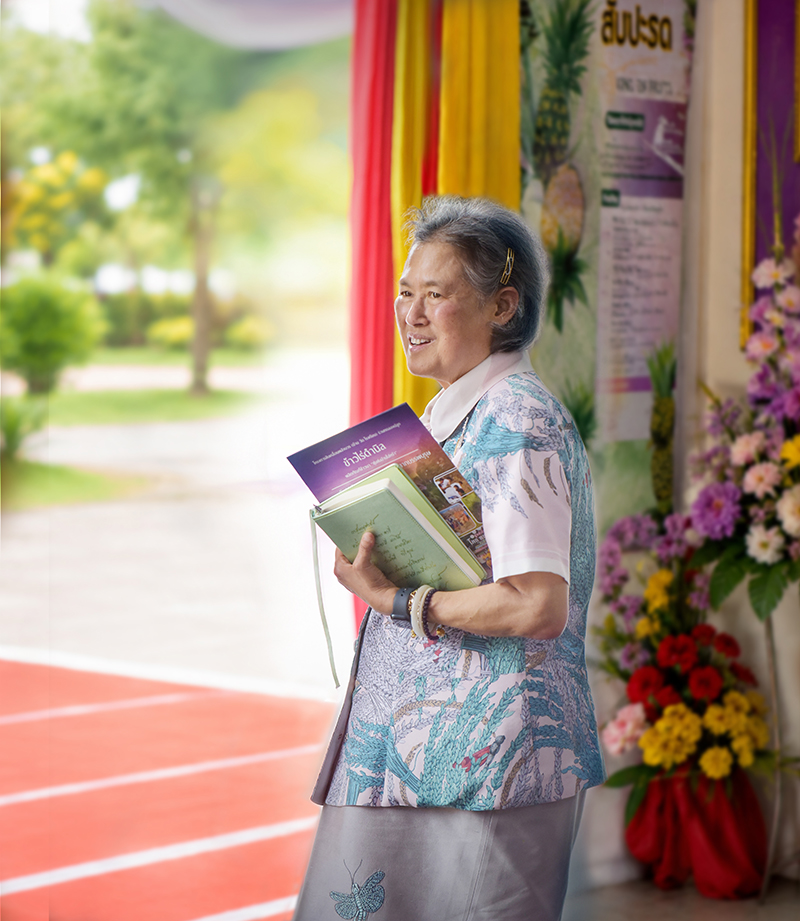
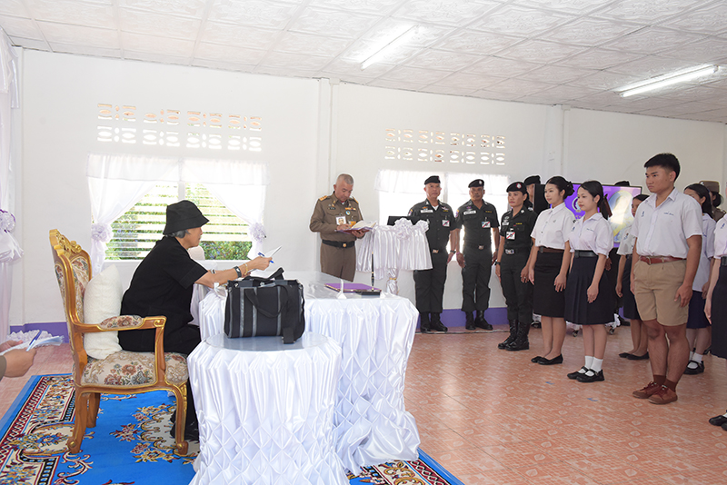
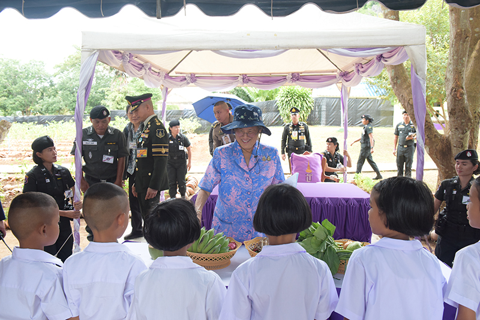
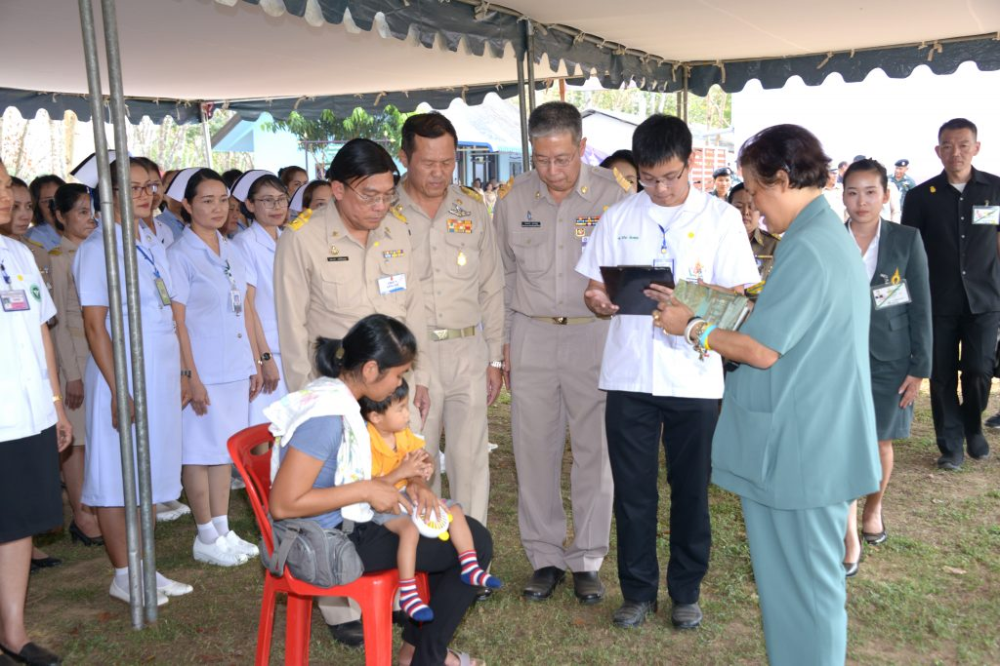
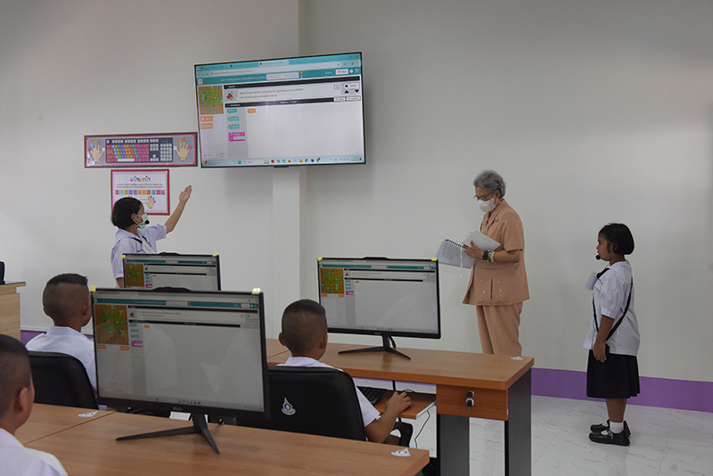
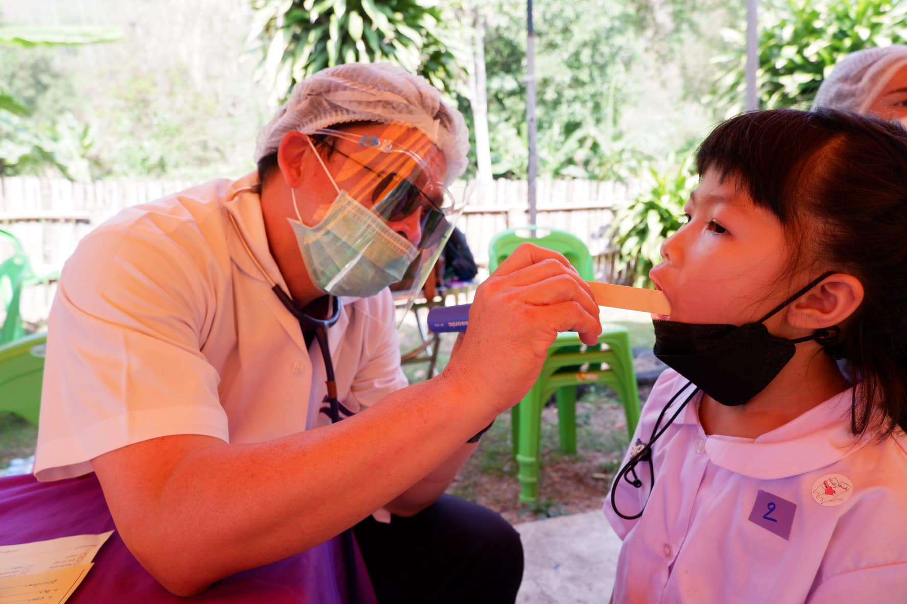

“...การบำรุงรักษาและป้องกันป่าไม้นั้น ไม่ได้ผลเต็มที่เพราะเรามักจะไปเพ่งเล็งหรือใช้วิธีการที่จะเรียกได้ว่าเป็นการรังแกคน คือว่าคนที่อยู่ในป่าหรือคนที่อยู่ใกล้ป่าที่เขาไม่มีที่ทำมาหากิน เขาก็ต้องเข้าไปตัดไม้เพื่อเอาไปขายหรือเอามาสร้างบ้านเรือน หรือทำที่ทำมาหากินในที่นั้น ซึ่งตามกฎหมายก็เป็นการผิดกฎหมายเพราะว่าเป็นป่าสงวน แต่ถ้าเราไม่มีการจัดที่ทำมาหากินให้เขา เขาก็ต้องทำอย่างนั้นเรื่อยไป ฉะนั้นการบำรุงรักษาป่าไม้จึงต้องควบคู่ไปกับการจัดหาที่ทำมาหากินและอาชีพให้แก่ราษฎรที่อยู่ในเขตป่านั้น ๆ หรือที่อยู่ใกล้เคียง...”
แนวพระราชดำริว่าด้วยการพัฒนาและอนุรักษ์ทรัพยากรธรรมชาติอย่างยั่งยืน มุ่งเน้นการแก้ไขปัญหาที่สอดคล้องกับวิถีชีวิตของราษฎรในพื้นที่อย่างแท้จริง ทรงมองเห็นความเชื่อมโยงระหว่างความสมบูรณ์ของผืนป่าและความเป็นอยู่ของชุมชน การแก้ไขปัญหาสิ่งแวดล้อมจึงไม่อาจแยกออกจากปัญหาความยากจนได้ การสร้างกระบวนการเรียนรู้และส่งเสริมอาชีพทางเลือกที่พึ่งพาตนเองได้ เป็นเครื่องมือสำคัญที่แปรเปลี่ยนราษฎรจากการเป็นผู้ทำลายมาเป็นผู้พิทักษ์รักษาทรัพยากรท้องถิ่นของตน




การดำเนินงานสนองพระราชดำริผ่านโครงการต่าง ๆ ทั่วประเทศ พิสูจน์ให้เห็นว่า เมื่อราษฎรมีแหล่งน้ำสำหรับทำการเกษตร มีที่ดินทำกินที่มั่นคง และมีความรู้ในการจัดการผลผลิตอย่างเหมาะสม ชุมชนจะสามารถเติบโตได้อย่างเข็มแข็งควบคู่กับการฟื้นฟูระบบนิเวศ ความสำเร็จเหล่านี้เกิดจากการบูรณาการการทำงานร่วมกันของทุกภาคส่วน โดยมีเป้าหมายเพื่อประโยชน์สุขที่ยั่งยืนของราษฎรและสร้างความมั่นคงด้านทรัพยากรธรรมชาติให้กับประเทศชาติสืบไป
